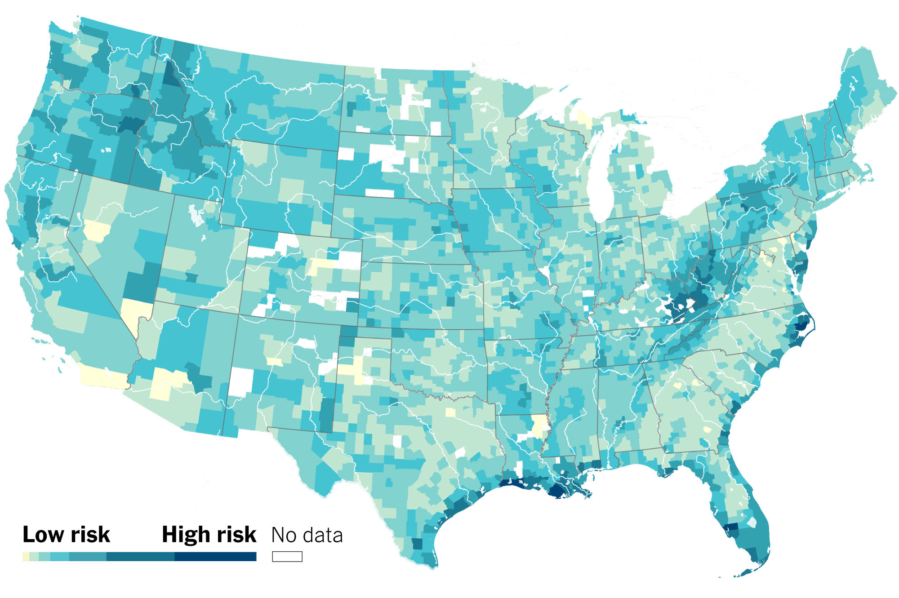
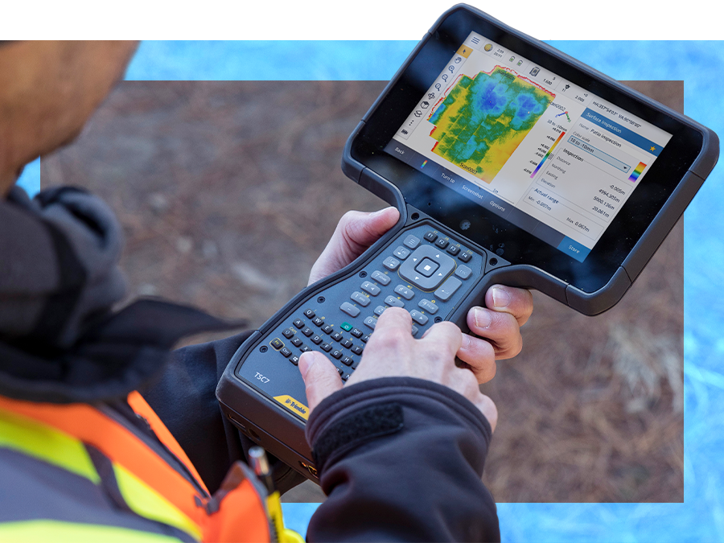
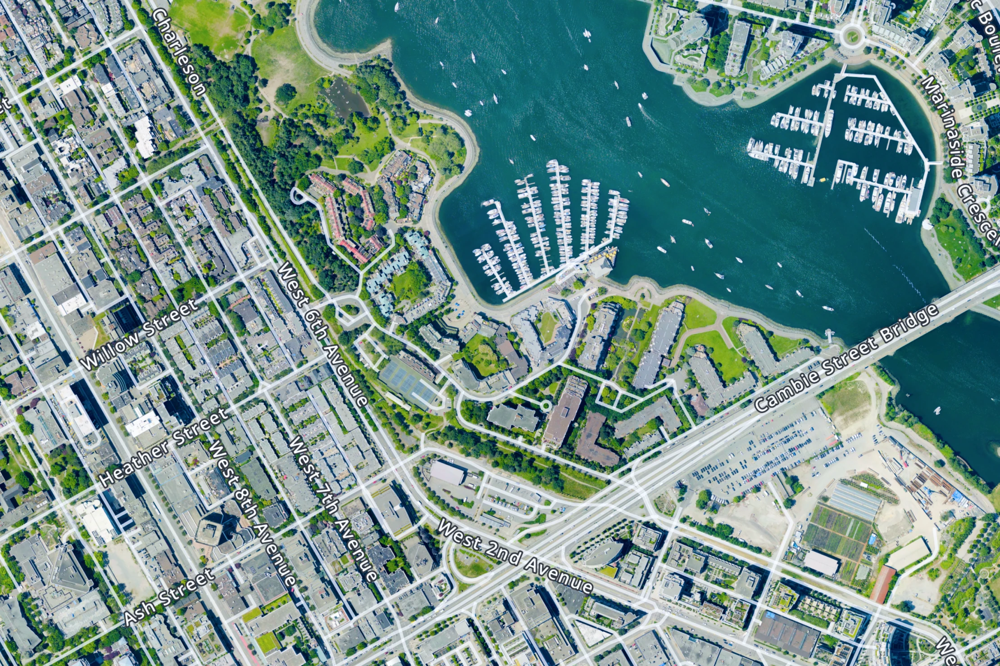

Introduction
Geographic Information Systems, commonly known as GIS, help communities understand geographic conditions, identify potential flood risks, and make informed decisions. GIS professionals combine maps, aerial imagery, field observations, and other forms of data to study locations and communicate their findings.
GIS in Flood Management



Practical GIS Workflow
The practical application of GIS in flood management involves several key steps:
- Data Collection: Gathering spatial data from various sources such as satellite imagery, topographic maps, and field observations.
- Data Processing: Cleaning and integrating the collected data into a unified GIS database.
- Analysis: Using GIS tools to analyze the data and identify flood-prone areas.
- Visualization: Creating maps and models to communicate the findings effectively.
- Decision Making: Utilizing the insights gained from the GIS analysis to inform flood management strategies.
Common Flood-Management Data
Common data used in flood management includes:
- Topographic maps
- Hydrological data
- Land use and land cover data
- Historical flood records
- Weather and climate data
GIS Workflow Overview
| GIS Workflow Summary | Primary Input | Result | |
|---|---|---|---|
| Data Collection | Gathering spatial data from various sources such as satellite imagery, topographic maps, and field observations. | Satellite imagery and field observations | Raw spatial data |
| Data Processing and Analysis | Cleaning, organizing, and analyzing geographic data. | Topographic maps and hydrological data | Flood-risk maps |
Flood Mapping Resources
For more information on flood mapping and GIS resources, visit the following links: